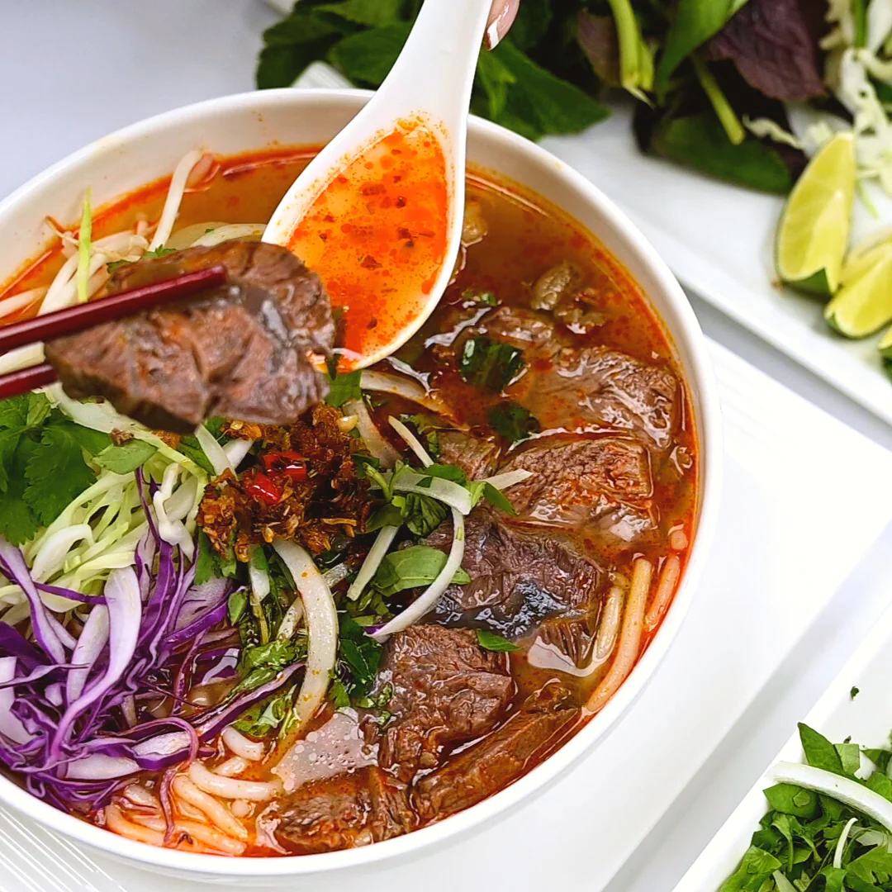

Bun Bo Hue

Description
Packed with umami, Bún Bò Huế is a hearty soup of tender sliced brisket and short rib meat fanned over vermicelli noodles and topped with a bounty of colorful, fresh garnishes. The rich, lemongrass-infused beef bone broth has layers of aromatics, sweetness, and spice. Making it is a labor of love. It can be prepared through step 6 up to three days in advance, or frozen for up to one month. Perilla leaves and mildly sweet rock sugar can be found at most Asian grocery stores.
Ingredients
Broth
- 2 large garlic heads
- 2 large (1 1/2-pound) yellow onions (unpeeled), halved lengthwise
- 16 quarts water, divided
- 1/4 cup plus 3 tablespoons kosher salt, divided, plus more to taste
- 2 pounds oxtail, cut into 2-inch-thick pieces
- 2 pounds pork soup bones (such as neck bones)
- 2 pounds bone-in English-cut beef short ribs
- 1 pound beef brisket flat, trimmed
- 10 lemongrass stalks, trimmed and smashed (bottom 4 inches only)
- 3 ounces rock sugar plus more to taste
Soup
- 1 1/2 teaspoons crushed red pepper
- 1 teaspoon annatto seeds
- 1/4 cup canola oil
- 1 cup sliced shallots (from 2 large shallots)
- 4 lemongrass stalks, trimmed and finely chopped (bottom 4 inches only)
- 1 1/2 to 2 tablespoons shrimp paste
- 2 to 4 tablespoons fish sauce (such as Three Crabs), plus more to taste
- 1/2 teaspoon kosher salt, plus more to taste
- Rock sugar, to taste
- 2 (14-ounce) packages round rice noodles (such as rice vermicelli) or pho noodles
- 1 (12-ounce) package cha lua or gio lua (Vietnamese pork cake), cut crosswise into 1/4-inch-thick half-moons
- 1/2 cup thinly sliced scallions
- Bean sprouts, lime wedges, fresh Thai basil leaves, fresh mint leaves, thinly sliced purple cabbage, whole red Thai chiles, thinly sliced yellow onion, perilla leaves, ot sa te (Vietnamese saté sauce), or chile sauce, for topping
Steps
Make the broth
- Preheat oven to 350°F. Cut 1/2 inch off tops of garlic heads to expose cloves. Place garlic and onion halves, cut side down, on an aluminum foil–lined baking sheet. Roast in preheated oven until very tender and cut sides of garlic and onion halves are caramelized, 45 minutes to 1 hour.
- Meanwhile, bring 8 quarts water to a boil in a large stockpot over high. Stir in 1/4 cup salt, and return to a boil. Add oxtail, pork bones, and short ribs. Cover and return to a boil over high. Uncover and boil, undisturbed, until foam rises to surface, 3 to 5 minutes. Drain oxtail mixture in a colander, and rinse under cold running water to remove excess foam; set aside. Wash pot.
- Add remaining 8 quarts water to pot; bring to a boil over high. Stir in brisket, lemongrass, rock sugar, roasted garlic and onion, oxtail, pork bones, short ribs, and remaining 3 tablespoons salt. Bring to a boil over high. Cover and reduce heat to low. Simmer, stirring occasionally and skimming off any foam that rises to surface, until a thermometer inserted in thickest portion of brisket registers 200°F, about 45 minutes.
- Fill a large bowl with ice water. Transfer brisket to ice water (to stop cooking and give meat a firmer texture). Let stand 5 minutes. Remove brisket from ice water, and pat dry; wrap tightly in plastic wrap. Chill until ready to serve, up to 3 days.
- Increase heat under broth to medium, and gently simmer, uncovered, skimming fat occasionally, until broth is deeply flavored and meat is tender, about 2 hours. Remove from heat.
- Working in batches, pour simmered broth through a cheesecloth-lined fine wire-mesh strainer into a large pot. Transfer short ribs and oxtail to a plate; set aside, and let cool about 15 minutes. Discard remaining solids. Bring strained broth in pot to a simmer over medium, adjusting heat as needed. Simmer, uncovered, about 30 minutes, occasionally skimming fat that rises to surface but leaving a small amount for flavor.
Make the soup
- Using a mortar and pestle or a spice grinder, grind crushed red pepper and annatto seeds into a coarse powder. Heat oil in a medium skillet over medium. Stir in annatto seed mixture. Add shallots, lemongrass, and shrimp paste. Cook, stirring often, until shallots begin to soften, about 2 minutes. Remove from heat.
- Stir annatto seed mixture into simmering broth in pot. Cook, stirring occasionally, 5 minutes. Stir in fish sauce and salt. Season with sugar, fish sauce, and additional salt to taste. Simmer over medium, undisturbed, until flavors meld, about 20 minutes.
- While soup simmers, prepare noodles according to package directions. Thinly slice brisket, and pull oxtail meat from bones; discard bones. Remove short rib meat from bones; slice meat, and discard bones.
- To serve, arrange 1 cup noodles in each serving bowl, and top evenly with cha lua and other meat. Ladle broth evenly over top. Sprinkle with scallions; serve with desired toppings.